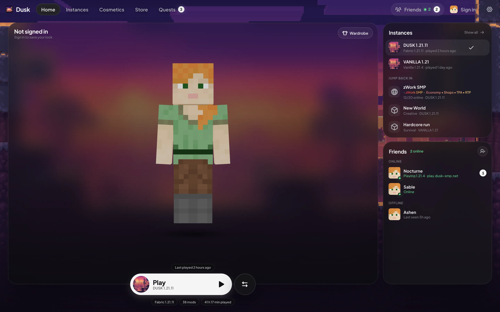
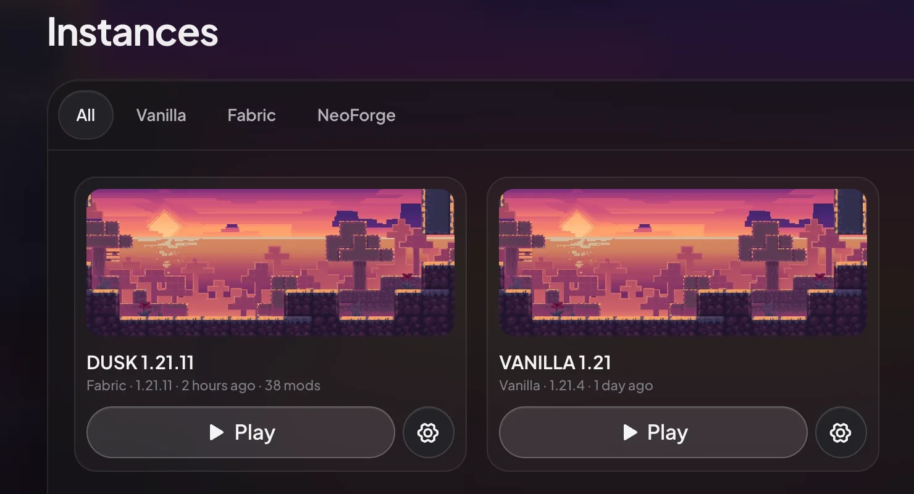

The PvP launcher with no ads, ever.
Vanilla, Fabric and NeoForge from 1.21 to 26.3, with a PvP client built in. Free and open source.

DuskClient builds for every release from 1.21 to 26.3
- 1.21.1
- 1.21.3
- 1.21.4
- 1.21.5
- 1.21.8
- 1.21.10
- 1.21.11
- 26.1
- 26.2
- 26.3
A PvP client that comes with the launcher.
DuskClient is added to every Fabric instance you start. No separate download, no shuffling jars in a mods folder.
Right Shift opens the HUD editor in game. Drag, scale and switch on any of the 43 HUD elements from one window.
Try it: press W, A, S, D or Space, and click the mouse keys.
Combat 12
- Keystrokes
- CPS Counter
- Reach
- Combo
- Armor Status
- Held Item
- Potion Effects
- Cooldowns
- Totem Counter
- Low Durability
- Inventory
- Full Inventory
Movement and world 12
- Coordinates
- Nether Coords
- Compass
- Minimap
- Pitch
- Speed
- Sprint Status
- Sneak Status
- Distance
- Biome
- Light Level
- Looking At
Session 13
- FPS
- Ping
- TPS
- Server Lag
- Clock
- Game Time
- Day Counter
- Weather
- Playtime
- Stopwatch
- Memory
- Server Address
- Entity Count
Items and minigames 6
- Item Counter
- Item Pickups
- Sign Reader
- Resource Packs
- Bedwars Resources
- Skyblock Stats
Past the HUD
- Fancy Third Person
- An over-the-shoulder camera you steer with the mouse.
- Zoom, Freelook and Freecam
- Look around or fly the camera without moving your player.
- Voice chat
- Talk on Simple Voice Chat servers, to Dusk players nearby, and in calls with friends.
- Clips and replays
- Record gameplay with game audio, or keep a replay buffer and save the last stretch as a clip on a key.
- Crosshair, hitboxes and nametags
- Custom crosshairs, Toggle Sprint, Motion Blur, Fullbright, Low Fire and more.
- Performance page
- See what each module costs per frame, with CPU, memory and GC beside it.
Some render and camera modules need 1.21.11 or newer.
More frames than Lunar.
On the same MacBook Air, Dusk runs past 500 FPS. Lunar never got above 300.
The launcher also stops drawing its own window while Minecraft runs, so those frames go to the game too.
Everything else a launcher should do, and nothing it shouldn't.

-
Instances that stay separate
Each instance keeps its own version, mods and settings. Switch between a 1.21.8 PvP setup and a 26.3 survival world without opening a folder.
-
Modrinth in one click
Browse modpacks and mods from Modrinth and install them straight into an instance. They stay up to date from the same page.
-
Friends on the home screen
See who's online and what they're playing, and jump back into the servers and worlds you played last.
-
Cosmetics on a live model
Try capes, accessories and skins on a 3D preview before you wear them. Earn coins from redeem codes and by inviting friends.
Standard Fabric. Nothing hidden.
Anti-cheats look for injected code and packets a vanilla client would never send. DuskClient does neither, and the source is there for anyone to read.
Read the client code-
No injection
No JVM agents, no runtime injection, no rewritten jars. DuskClient loads through the stock Fabric loader like any other mod.
-
Client side only
Its mixins touch rendering, the HUD and input. Nothing sends packets to the server or changes movement.
-
Verified files
Every game file is checked against Mojang's sha1 hash before launch, so what runs is what Mojang shipped.
-
Signed updates
The launcher checks for updates at startup and every six hours, and only installs builds signed with our key.
Latest release
Get DuskLauncher.
Free on macOS, Windows and Linux. It keeps itself up to date after the first install.
On a Mac, Homebrew is the easiest way in
brew install --cask ryz3nplayz/tap/dusklauncher
On Linux, one command installs it for your user, no sudo
curl -fsSL https://raw.githubusercontent.com/Ryz3nPlayZ/dusklauncher/main/launcher/scripts/install-linux.sh | sh
The macOS build isn't notarized yet. Homebrew clears the warning for you. With the DMG, right-click the app and choose Open the first time.
Windows Your system
Windows 10 and 1164-bit installer, .exeCouldn't reach GitHub just now. Each link above opens the releases page instead, where every file is listed.
All releases and changelogsQuestions
Is it really free?
Yes. The launcher and the client are free, and there are no ads, ever. Cosmetics use coins, which you get from redeem codes and from inviting friends: 500 coins for you and 250 for them.
Can I get banned for using DuskClient?
DuskClient only changes what you see: the HUD, rendering, and input like Toggle Sprint. It never sends packets or touches movement, which is what anti-cheats watch for. Every server still sets its own rules, so check the ones you play on.
Which Minecraft versions work?
Vanilla and Fabric for every release from 1.21 to 26.3, and NeoForge from 1.20.2. DuskClient has builds for 1.21.1, 1.21.3, 1.21.4, 1.21.5, 1.21.8, 1.21.10, 1.21.11, 26.1, 26.2 and 26.3.
Do I need a Microsoft account?
Yes. Sign in with the Microsoft account that owns Minecraft: Java Edition.
Can I add my own mods?
Yes. Fabric instances take any Fabric mods, installed from Modrinth or dropped in by hand. DuskClient sits next to them.
macOS says the app is damaged or can't be opened.
That's Gatekeeper, because the build isn't notarized yet. Install with Homebrew, or right-click the app and choose Open. If that doesn't work, run this once in Terminal:
xattr -dr com.apple.quarantine /Applications/DuskLauncher.appHow do updates work?
The launcher checks at startup and every six hours. When a signed update is ready, an update button appears in the top bar. Nothing installs until you click it.